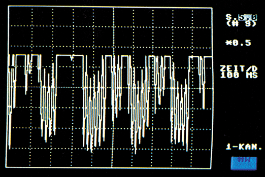

Speicheroszilloskop
Ein Speicheroszilloskop braucht man, um zum Beispiel die Temperaturschwankungen in einem Treibhaus sichtbar zu machen. Wie Sie die Aufgabe von Ihrem Computer ausführen lassen können, wollen wir Ihnen hier zeigen.

Ein Computer kann nur digitale Größen verstehen. Da die Meßwerte meist als analoge Größen vorliegen, müssen wir sie erst in digitale Größen übersetzen. Die notwendige Umsetzung übernehmen Analog/Digital-Wandler (A/D-Wandler). Dabei wird ein analoger Wert in viele kleine Teilstücke zerlegt. Diese »Teilstücke« kann man durch Zahlen darstellen, mit denen der Computer weiter arbeiten kann.
Durch ein Programm können wir den Computer zum Beispiel veranlassen, alle 10 Minuten eine Temperatur zu messen. Diese Werte werden in eine Tabelle der Reihe nach eingetragen und stehen somit für eine spätere Auswertung bereit. Hierbei ist es besonders wichtig zu wissen, wie sich die Temperatur in einem Heizkessel, in einem Aquarium oder Treibhaus ändert, um Geräte, Pflanzen oder Tiere vor Schaden zu bewahren.
Es ist recht mühsam, sich anhand von vielen Zahlenwerten zeitliche Änderungen eines Wertes vorzustellen. Es bleibt in der Regel nur die Lösung, die Messungen in ein Diagramm einzutragen.
Verbindet man nun die einzelnen Punkte miteinander, so erhält man eine anschauliche Kurve. Diese Arbeit können wir genausogut dem Computer überlassen.
Speichernde Oszilloskope werden heute in allen Bereichen der Geräte- und Maschinenüberwachung eingesetzt. Besonders langfristige Änderungen der Meßwerte entgehen dem Beobachter und es können schwere Beschädigungen an Anlagen entstehen. In der Elektronik kann ein Speicheroszilloskop hilfreich sein, um niederfrequente Tonsignale sichtbar zu machen.
(do)